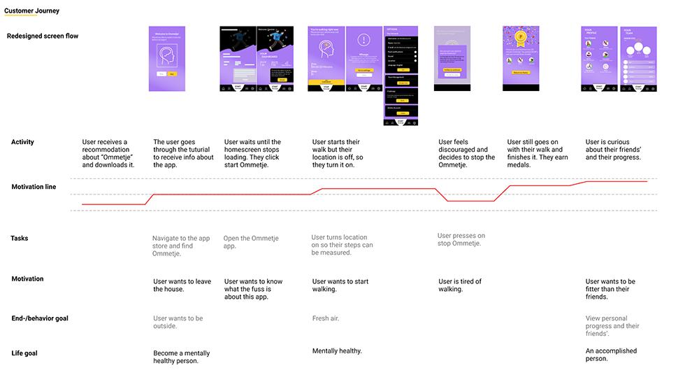

Ommetje
During my User Experience Design minor, I followed a course "Seductive Interaction Design", where I learned several ways to use seductive patterns to help users achieve their goals. I was allowed to combine this course with the HCI Mastery course where I learned to give the app a personality with micro interactions and animation.
The Dutch Brain Foundation has created the Ommetje app to encourage people to walk outside every day. It is based on research that walking for 20 minutes a day keeps a person mentally healthy. It turned out that the app was not of interest to people under 40, so the task was to improve it so that more people under 40 use it.

Process
Before starting the design process, I started researching the existing app through user tests. This allowed me to map out the pain points to improve the app and make it more attractive for the target group 18 to 40 years old. It turned out that the app was boring and didn't motivate the user enough to use while walking.
By means of a customer journey, I mapped out how the user progresses through the app, in which I could see what their expectations look like.
Postulates I've used:
Final Delivery
I redesigned the Ommetje app with a brand new look and based on the users' needs and wants. For final delivery, I presented the product based on the prototype and my research results.